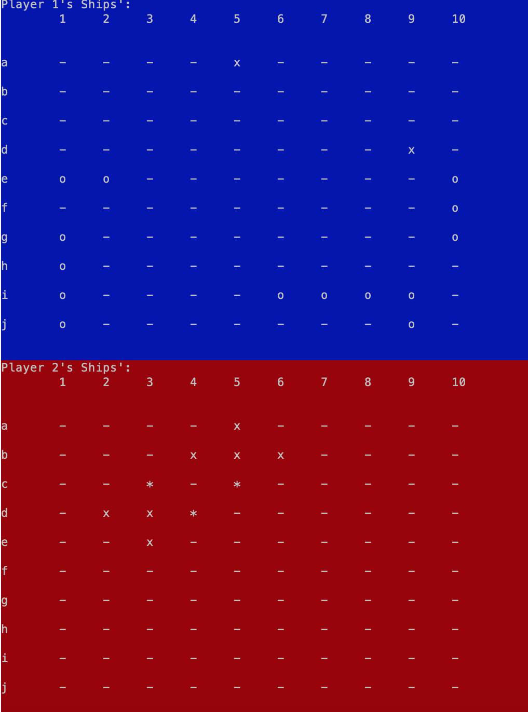

Languages: Javascript (d3), HTML, CSS
This data visualization was created by using two datasets from Kaggle. Using d3.js, my fellow group members and I cleaned the data and created two graphs that accurately displayed the correlation between U.S. mass shootings and gun violence within the years of 2013-2016.
The users are able to hover over the points to view more details about each specific incidence, including the Number of Fatalities, Location, etc., and toggle between the years to see if there were any notable change throughout the years.

Languages: OCaml
This is a text-based implementation of a popular childhood game, Battleship. A user is able to play a Solo or a Versus game. In both versions, the user can either place each ship manually or have the program place all the ships randomly. The user can then start firing at coordinates and the terminal will show whether or not it was a "Hit", a "Miss", or a "Sunk".
As a twist, we added the functionality of a "bomb," which fires in a cross-like pattern, and each player is given three at the start of the game. The AI in the Solo game that was implemented has the ability to utilize these bombs and makes strategic, smart decisions for all of its moves. When the AI gets a “Hit,” it will fire/bomb around that point until it sinks the ship. If there is no strategic move to be made, the AI will then randomly fire until it gets another hit, essentially mimicking the actions of a human.
Languages: Javascript, HTML, CSS
This website was designed for the Cornell Artistic Beads Club, a student organization on my school's campus that aims to spread the art of artistic beading.
After meeting with our client several times, my group and I designed this website that effectively met all of our client's needs and wants.